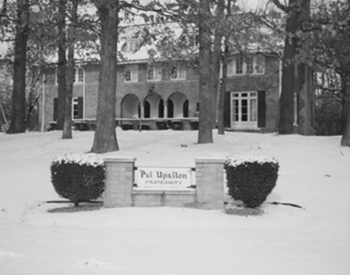

Chapter 30 on the roll
The Epsilon Nu


- Position on the roll#30
- InstitutionMichigan State University
- Chartered1943
- StatusActive since 1943
- Coat of armsfull-size PDF
In the archive
Pages that name the Epsilon Nu Chapter or its institution.
Named on 353 pages across 172 volumes of the archive.
…tions Special Resolution No. 1. Resolved: That the Convention welcomes the Epsilon Nu Chapter into the Fraternity. Special Resolution No. 2. Resolved: That the Convention is grateful to the members of the Executive Council, and the officers of…
…went kto press, news had just been re ceived that the Hesperian Society of Michigan State University would be installed on April 17, 1943, as the Ep silon Nu chapter. The installation will take place at the house of the Hesper ians in East Lansing, M…
Page4Psi Upsilons Assembled at Epsilon Nu Chapter Installation 37 INITIATED AT EPSILON NU INSTALLATION By Scott Turner, Phi '02 President, Executive Council of the Psi Upsilon Fraternity songs and ri…
…Alumni Asso ciation, as Archivist. A resolution was adopted welcoming the Epsilon Nu Chapter, which was in stalled on April 17, 1943, at Michigan State CoUege, Lansing, Michigan, into the Fratemity. The Executive Council announced that in Jan…
…do more than their part in con tinuing the successful perpetuation of the Epsilon Nu Chapter. With the, retum of five hundred civiUan men to campus, approximately one half of them freshmen, the opportunities of mshing presented themselves. Ou…
…Bassett Associate Editor EPSILON NU Michigan State College 1944 finds the Epsilon Nu Chapter func tioning heartily at Michigan State, despite the rigorous stigma which war has imposed upon fratemity fife. Although the Chapter roster has dwind…
Page31…Lee Gmnst, recording secretaty; Ed. W. Pinckney, corresponding secretaty. The Epsilon Nu Chapter is prospering de spite the constant depletion of our forces by the army and navy, thanks to wholehearted co operation between the alumni and under gr…
Page21…ould be given to this question. The President noted with approval that the Epsilon Nu Chapter stood sixth out of sixteen in the scholarship
Page10…Alford Associate Editor EPSILON NU Michigan State College The progress of Epsilon Nu Chapter during these war times is unique but not unusual as shortly after our instaUatlon in April 1943 the 22 charter and then active members were practical…
Page27…tion by the end of April. W. AjRTHtm McClellan Secretary, Zeta Zeta Alumni Epsilon Nu Chapter Celebrates Second Birthday Thirty brothers gathered together to help Epsilon Nu celebrate its founding date (April 17, 1943) at its second Anniversar…
Page10…as follows : By adding a Section 12 to Article VI, this section to read: "The Epsilon Nu Chapter shall be allowed to initiate post humously those members of the Hesperian Society who died in the service of their country in World War II." 8. Resol…
…m 50 to 55 men in the House before the end of September. A report from the Epsilon Nu Chapter was read, showing the Chapter's scholastic standing as eighth in 16 fraternity groups with an average of 1.50, the same as the all-man average for th…
Page11…. Chapman, Jr., '48). Prospects for the coming year are very bright at the Epsilon Nu Chapter. The House has been refinished and refurnished. It has fifty-six members. A plan has been worked out with reference to house mothers at fraternity ho…
Page22…tend our invitation to the Fraternity to hold its 1953 Convention with the Epsilon Nu Chapter in conjunction with our 10th Anniversary and also the first year of our University in the "Big Ten". Nu� (Previously passed)� (Robert G. Dixon, '52).…
Page29…ph Wenger, John Gilman, Bud Crane and Hal Harwood (seated), members of our Epsilon Nu Chapter.
Page13…records of the Sigma Chapter, the Eta Chapter, the Epsilon Chapter and the Epsilon Nu Chapter as evidenced by the scholarship standings as of January, 19S1, also deserve the recognition of honorable mention; and Resolved: That your Committee h…
…nstruction. Henry Richard Pattengill, Epsilon Nu '44 Charter member of the Epsilon Nu Chapter of Psi Upsilon, killed during the invasion of Normandy, in whose memory the new Epsilon Nu Chapter room was decorated and furnished. Henry Richard Pa…
…that the invitation be accepted. Resolved: That this Convention thank the Epsilon Nu Chapter for its kind invitation to be host to the Convention in 1954, and suggest that the Epsilon Nu Chapter renew its invitation at the 1953 Convention for…
…s for the Convention in 1953; resolution to consider the invitation of the Epsilon Nu Chapter as hosts for the 1954 convention; resolution that $1500 be transferred from the Bridgman Fund to The Diamond Fund; resolution on voting on the instal…
Page13…hapter at McGiU University, were mistakenly designated as belonging to the Epsilon Nu Chapter at Michigan State i CoUege. They were: BasketbaU, Wipper; I Track, Abbot and Hyde; and squash, Walsh. j No doubt the error was due to a clerical mist…
Page35…ttle undone, highlighted by a betweensemester party in East Tawas with the Epsilon Nu Chapter. Other events were our annual Christmas and Pledge Formals and our exchange functions with the Epsilon Nu in both East Lansing and Ann Arbor. We also…
…hapter then left for the South, and shortly after our return to school the Epsilon Nu Chapter arrived in Ann Arbor for a great weekend. We then held our annual pledge banquet in honor of the new initiates and pledges, and the occasion provided…
Page19…ege � H Associate Editor The Fall term of 1954 was very successful for the Epsilon Nu Chapter both scholastically and socially. The outstanding achievement was along academic lines. The Chapter is proud to announce that they have raised the Ho…
Page37…very reason to believe that it will be so again this term. In closing, the Epsilon Nu Chapter wishes to extend its standing invitation to anyone in the vicinity of East Lansing, to come in and pay us a visit. EPSILON OMEGA Northwestern Univers…
Page31…ng social schedule. High points so far have been a great week-end with the Epsilon Nu Chapter here in Ann Arbor, our annual dance with the Phi Kappa Psi Fra ternity, and Fathers' Weekend. The alumni turnout for our fall open houses has been gr…
…ment over the previous year's academic standing should be presented to the Epsilon Nu Chapter; and RESOLVED : That the Convention commend and congratulate the Theta Theta Chapter for outstanding scholastic im provement during the 1955 academic…
…i, to stop in for a visit if they are in Vancouver at any time. EPSILON NU Michigan State University John W. Miller, Associate Editor Fall term proved to be both a successful and an enjoyable one for the men at the Epsilon Nu. All undertakings, both…
Page34…invitation to any and all Brothers visiting on the West coast. EPSILON NU Michigan State University Bernie Lattner, Associate Editor The Brothers at the Epsilon Nu were very pleased to receive the award for scholastic improvement for the 1954-1955 s…
Page37…eLoria, Fort Lauderdale, Florida; Donald Tischbein, Grosse Pointe; William Epsilon Nu Chapter House Wilson, Buffalo, N.Y.; and Thomas Grimes, East Lansing. These fine young gentlemen will attempt to fill the vacancies left by Bill Jonson, outg…
Page40…nel A. M. Brown, William T. Brown and Pledge Michael J. Brown. EPSILON NU Michigan State University An entiiusiastic group of Psi Upsilon's opened the faU term in a Chapter House shiny with new paint both inside and out. A year that bids fair to be…
…inment to a national con vention of university student governments held at Michigan State University during the winter term. Spring term found us playing host again but for the Greek Feast, climax to "Greek Week" held annually on our campus. A buffet…
Page48…apter work on the problem, which will be done in the fall term. EPSILON NU Michigan State University David L. Rogers Associate Editor Perhaps our biggest social success of the year was held winter term when the Epsilon Nu term party came off without…
…. Proceeds of the event will be put to wards the building fund. EPSILON NU Michigan State University DAvro L. Rogers, Associate Editor This past Fall the Epsilon Nu imdertook a new msh program under Rush Chairman Ed Murphy. We accepted 20 fine men as…
Page39…even higher achievements in the great tradition of Psi Upsilon. EPSILON NU Michigan State University David L. Rogers Associate Editor At the beginning of Winter Term the Brothers of the Epsilon Nu initiated seven new men into the bonds; George Russel…
Page4028 THE DIAMOND OF PSI UPSILON Epsilon Nu Chapter, fall, I960. cago; Tim Rafferty, Dearborn; Rich Milock, Grosse Pointe; and Mike Makinen, Tim Mc Dermott, Jim Fitzgerald, and Ed Lyons, aU of Detroit.…
Page30…sted and received permission to address the convention. He stated that the Epsilon Nu Chapter would Uke to invite the convention to meet with the Epsilon Nu Chapter in 1967, the occasion of its 25th anniversary. Roland B. Winsor, Epsilon Phi '…
Page13…ll, and handsome, in other words, every girl's greatest desire. EPSILON NU Michigan State University For the first time in several years, the Ep silon Nu of Psi U has no room for transients. By the time fall registration of the year 1960 had ended, f…
Page37…g helpful support of the Executive. EPSILON NU Michigan State . University The Epsilon Nu Chapter at Michigan State ended a very successful year, marked by in creased social prestige and athletic excel lence in intramural sports. The Chapter's mos…
Page31THE DIAMOND OF PSI UPSILON 33 EPSILON NU Michigan State University As the brothers of the Epsilon Nu re turned to school for the fall term, 1961, the feeling that another successful year was to be achieved ran throug…
Page35…uld Lang Syne" rang forth in a fitting finale to the fall term. EPSILON NU Michigan State University Associate Editors: D. R. Linder and R. L. Barrett Having emerged from difficult times, the Epsilon Nu is now standing in an ideal posi tion to engage…
Page34…as the brothers split up on their various paths for the summer. EPSILON NU Michigan State University P. W. Pace and J. W. Schroeder Associate Editors With the academic year almost at a close, we look back with fond memories at the events of the year…
Page35…8 graduate of Farmington High School and received a bachelor's degree from Michigan State University where he was a member of Alpha Kappa Psi. Philip R. Piper, Xi '32, writes to report that his father, Charies B. Piper, M.D., Pi '01, and his mother a…
Page22…omson, Rushing Chairman, 2260 Westbrook Crescent, Vancouver, B.C., Canada. Michigan State University-Epsilon Nu�Douglas R. Linder, President, 810 W. Grand River Ave., Lansing, Mich. Northwestern University-Epsilon Omega�Richard H. Benke, Rushing Chai…
Page23…several years, the Phi was joined in this commemoration by members of the Epsilon Nu Chapter at Michigan State Uni versity. Preceding the banquet of the evening, the Phi Alumni Corporation met for luncheon and held its regular board meeting.…
…ty; Omega, University of Chicago; Phi, University of Michigan; Epsilon Nu, Michigan State University; Epsilon, Uni versity of California; Theta Theta, Uni versity of Washington; Zeta Zeta, Uni versity of British Columbia; Iota, Kenyon College; and Ch…
…se during the month-long encampment period. A member of die AFROTC unit at Michigan State University, the cadet will be ehgible for a commission as an Air Force second lieutenant upon completion of AFROTC training and graduation from college. Worth A…
…chapter as a stiong and vital force in cam pus fraternity lffe. EPSILON NU Michigan State University Kevin D. Connelly, Associate Editor As the Brothers of the Epsilon Nu scratch the remaining several days from their Fall term schedule, it is just th…
…to advance our position as one of the top fratemities at U.B.C. EPSILON NU Michigan State University Kevin D. Connelly, Associate Editor As winter term draws to a close at Michigan State, the men of the Epsi lon Nu proudly reflect upon the reali zati…
…it stands at 810 West Grand River Avenue in East Lansing on the campus of Michigan State University. ^Jlte'^^fc D. Connelly [^Km^^^ Epsilon Nu '67 This spring term, the final one on the agenda for the 64-65 academic program at Michigan State, has be…
…E. Fades, '62, Box 162, Station A., Vancouver 1, B.C., Canada Epsilon Nu� Michigan State University�1943� 810 W. Grand River THE PSI UPSILON FOUNDATION, INC. 4 West 43rd Street New York, New York 10036 In consideration of the contribution of others,…
Page36…of Toronto�1920 McGill University�1928 University of British Columbia�1935 Michigan State University� 1943 Northwestern Untversity-1949 Address Union College, Schenectady, N.Y. 115 W. 183rd St., New York, N.Y. South Pleasant St., Amherst, Mass. Hanov…
Page36…NVENTION OF PSI UPSILON held under the auspices of the EPSILON NU CHAPTER (Michigan State University) at The Boyne Highlands Harbor Springs. Michigan September 5-8, 1967 Your Executive Council takes pleasure in welcoming the delegates and visitors to…
…Beahrs of the Epsilon. Chuck Stoddard of the Epsilon Nu was graduated from Michigan State University with almost every dis tinction available to undergraduates at that insti tution. Tad was a Daniel Webster Scholar in high school, and spent his last…
…r Springs, Michigan, was chosen for two reasons. The Epsilon Nu chapter at Michigan State University is in its 25th year of operations as a chapter of Psi Upsilon Fratemity. This con vention is part of that anniversary program. The choice of a resort…
…5, was routine, being called to order by Morrison B. Stevens, '68, of the Epsilon Nu Chapter, Host Chapter for this 125th convention in their own 25th year of operation as a chapter of Psi U. In the course of this session the Annual Communica…
…an CoUingwood, '63, 4070 West 36th St., Vancouver, B.C., Canada Epsilon Nm�Michigan State University�1943�810 West Grand River Ave., East Lansing, Mich. 48823. Alumni President: David H. Brogan, '56, 708 Michigan National Tower, P.O. Box 637, Lansing…
Page68…n CoUingwood, '63, 4070 West 36th St., Vancouver, B.C., Canada Epsilon Nu� Michigan State University� 1943� 810 West Grand River Ave., East Lansing, Mich. 48823. Alumni President: David H. Brogan, '56, 708 Michigan National Tower, P.O. Box 637, Lansi…
Page67…his age. If they do not, they will perish. M. P. B. (Seattle) I served the Epsilon Nu Chapter in various ways, including president, and have a hard time getting enthused now about PSI U nationaUy, be cause of its failure (at least in the past)…
Page10…an Colhngwood, '63, 4070 West 36th St., Vancouver, B.C., Canada Epsilon Nu�Michigan State University�1943�810 West Grand River Ave., East Lansing, Mich. 48823. Alumni President: David H. Brogan, '56, 708 Michigan National Tower, P.O. Box 637, Lansing…
Page48…lffe," Affred L. Seelye, Pi '37, has resigned his position as dean of the Michigan State University College of Business and Graduate School of Business to enter the wars as a corporate executive. He wfll become president of Wolverine World Wide, Inc…
…n CoUingwood, '63, 4070 West 36th St., Vancouver, B.C., Canada Epsilon Nt/�Michigan State University�1943�810 West Grand River Ave., East Lansing, Mich. 48823. Alumni President: David H. Brogan, '56, 708 Michigan National Tower, P.O. Box 637, Lansing…
Page19…ohn D. Stibbard, 3735 Capilano Rd., North Vancouver, B.C., Can. Epsilon Nm�Michigan State University�1943�810 West Grand River Ave., East Lansing, Mich. 48823. Alumni President: David H. Brogan, '56, 708 Michigan National Tower, P.O. Box 637, Lansing…
Page20…n nual Founders Day Celebration at the University Club in Detroit with the Epsilon Nu Chapter, of Michigan State. Over 100 active and alumni Brothers thoroughly enjoyed the evening. Rush at the University of Michigan has been very slow. This w…
…ohn D. Stibbard, 3735 Capilano Rd., North Vancouver, B.C., Can. Epsilon Nu�Michigan State University�1943�810 West Grand River Ave., East Lansing, Mich. 48823. Alumni President: David H. Brogan, '56, 708 Michigan National Tower, P.O. Box 637, Lansing…
Page24…ohn D. Stibbard, 3735 Capilano Rd., North Vancouver, B.C., Can. Epsilon Nw�Michigan State University�1943�810 West Grand River Ave., East Lansing, Mich. 48823. Alumni President: David H. Brogan, '56, 708 Michigan National Tower, P.O. Box 637, Lansing…
Page20…ohn D. Stibbard, 3735 Capflano Rd., North Vancouver, B.C., Can. Epsilon N��Michigan State University�1943�810 West Grand River Ave., East Lansing, Mich. 48823. Alumni President: David H. Brogan, '56, 708 Michigan National Tower, P.O. Box 637, Lansing…
Page24…ld F. Simons, '69, 1457 East 27th Stieet, Vancouver, B.C, Can, Epsilon Nu� Michigan State University� 1943� 810 West Grand River Ave,, East Lansing, Mich. 48823. Alumni President: David H. Brogan, '56, 500 Wildwood, East Lansing, Mich. 48903 Epsilon…
Page20…ld F. Simons, '69, 1457 East 27th Street, Vancouver, B.C., Can. Epsilon Nu�Michigan State University�1943�810 West Grand River Ave., East Lansing, Mich, 48823. Alumni President: David H. Brogan, '56, 500 Wildwood, East Lansing, Mich. 48903 Epsilon Om…
Page28…d F. Simons, '69, 1457 East 27th Stieet, Vancouver, B.C., Can. Epsilon Nu� Michigan State University� 1943� 810 West Grand River Ave., East Lansing, Mich. 48823. Alumni President: David H. Brogan, '56, 500 Wildwood, East Lansing, Mich. 48903 Epsilon…
Page24…ald F. Simons, '69 1457 East 27th Street, Vancouver, B.C., Can. Epsilon Na�Michigan State University�1943�810 West Grand River Ave., East Lansing, Mich. 48823. Alumni President: David H. Brogan, '56, 500 Wildwood, East Lansing, Mich. 48903 Epsilon Om…
Page32…ld F. Simons, '69, 1457 East 27th Stieet, Vancouver, B.C., Can. Epsilon Nw�Michigan State University�1943�810 West Grand River Ave., East Lansing, Mich. 48823. Alumni President: David H. Brogan, '56, 500 Wfldwood, East Lansing, Mich. 48823 Epsilon Om…
Page40…education at Parr's Preparatory Acad emy in Chicago and was a graduate of Michigan State University and the University of Michigan. He received his law degree from Northwestern University. Brother Cody, who was the thffd cousin, twice removed, of th…
…ert L. Hawkins, '62 453 West 12th Street, Vancouver, B.C., Can. Epsilon N��Michigan State University�1943�810 West Grand River Ave., East Lansing, Mich. 48823. Alumni President: David H. Brogan, '56, 500 Wildwood, East Lansing, Mich. 48823 Epsilon Om…
Page32…, After additional study at Teachers College of Columbia University and at Michigan State University and serving as Staff Associate in the De partment of Education at the Univer sity of Chicago, Brother McPherson received the degree of Doctor of Phil…
…rt L. Hawkins, '62, 453 West 12th Street, Vancouver, B.C., Can. Epsilon Nm�Michigan State University�1943�810 West Grand River Ave., East Lansing, Mich. 48823. Alumni President: David H. Brogan, '56, 500 Wildwood, East Lansing, Mich. 48823 Epsilon Om…
Page36…Robert L. Hawkins, '62 453 West 12th St., Vancouver, B.C., Can. Epsilon Nu�Michigan State University�1943�810 West Grand River Ave., East Lansing, Mich. 48823. Alumni President: David H. Brogan, '56, 500 Wildwood, East Lansing, Mich. 48823 Epsilon Om…
Page36…bert L. Hawkins '62* 453 West 12th St., Vancouver, B.C., Can. ' Epsilon Nm�Michigan State University�1943�810 So^I?'"^ ^'''^'" ^^^^ East Lansing, Mich. 48823. Alumni President: David H. Brogan '56 500 Wfldwood, East Lansing, Mich. 48823 Epsilon Omega…
Page36…Epsi lon Nu '74, Associate Editor of The Diamond, has reported as follows: The Epsilon Nu Chapter at Michi gan State has enjoyed another fine term. The term has been a success in many ways. One of the highpoints of the term was our annual Homecom…
…'75; and Secretary, Jack A. Haedicke '75. Rush is now nearly over here at Michigan State University. We were very fortunate to have received eight pledges this spring during one of the poorest rushes this campus has seen in years. Our apparent succe…
…bert L. Hawkins, '62, 453 West 12th Ave., Vancouver, B.C., Can. Epsilon Nn�Michigan State University�1943�810 West Grand River Ave., East Lansing, Mich. 48823. Alumni President: David H. Brogan, '56, 500 WUdwood, East Lansing, Mich. 48823 Epsilon Ome…
Page36…0 Pennyslvania Avenue. Brother terHorst was bom and raised in Grand lected Michigan State University. While he was in at tendance there, his pursuit of a degree, majoring in American History and political science, was interrupt ed by his call to serv…
…aduation this year. lohn A. lack S. Gardner '75 Haedicke '75 An Epsilon Nu Epsilon Nu Chapter Leader Chapter President Brother Gardner, better known as Kodiac, is ending five productive years as an active Psi U. During this time he has served…
…iversity of Washington Zeta Zeta University of British Columbia Epsilon Nu Michigan State University Epsilon Omega Northwestern University Gamma Tau Georgia Institute of Tech. Chi Delta Duke University NOTE: For Chapter address, see back cover. Miles…
…y C. Wood '76 Secretary EPSILON NU 1943 Another academic year has ended at Michigan State University, and the outlook for the faU term of 1975 looks promising. Fourteen new Brothers were initiated into the Epsilon Nu in May. Our new Brothers include:…
…bert L. Hawkins, '62, 327 52 A St., Delta, B.C., Canada V4M 2Z7 Epsilon Nm�Michigan State University�1943�810 West Grand River Ave., East Lansing, Mich. 48823. Alumni President: John L. Locker, Jr., '73, 912 Nordiernview, Apt. 13, Ada, Ohio 45810 Eps…
Page36…bert L. Hawkins, '62, 327 52 A St., Delta, B.C., Canada V4M 2Z7 Epsilon Nu�Michigan State University�1943�810 West Grand River Ave., East Lansing, Mich. 48823. Alumni President: John L. Locker, Jr., '73, 912 Northemview, Apt. 13, Ada, Ohio 45810 Epsi…
Page28…ion held its Annual Meeting. A goodly number of the Alumni Brothers of the Epsilon Nu Chapter of Psi Upsilon were participants in the Annual Founders' Day Celebration held on Jan uary 30, 1976 in Detroit. This gathering of the mem bers of the…
…'73, 111-2290 Marine Dr., West Vancouver, B.C., Canada V7V 1K4 Epsilon Nu�Michigan State University�1943�810 West Grand River Ave., East Lansing, Mich. 48823. Alumni President: John L. Locker, Jr. '73, 31410 Creekside Dr., Pepper Pike, Ohio 44124 Ep…
Page28…ber 7, 1975, after a two-year siege with cancer. He had earned his B.S. at Michigan State University and his Doctor of Medicine at the University of Michigan. He spent the last twelve years in Portland, Ore gon. He spent time examining men who came t…
…Day banquet on Febmary 4 at the University Club in Detroit. This year the Epsilon Nu Chapter by far outnumbered those in attendance from the Phi! One of our own, Allan B. Wechsler '68, was the principal speaker. Not only is the Chapter expand…
…n. Originally in the cattle business with his father after graduating from Michigan State University, he was in 1971 the fovmder, director, and first president of the National Bank of Marshall. Last April he was appointed chairman of the board. Earli…
…ersity of Illinois University of Washington University of British Columbia Michigan State University Northwestern University Georgia Institute of Tech. Duke University NOTE: For Chapter address, see back Andrew M. Brooks '78 Sanford N. Scharf '78 Sco…
…lford '65, 9551 Glen Acres Dr., Richmond, B.C., Can., V7A IZl Epsilon Nu � Michigan State University�1943�810 West Grand River Ave., East Lansing, MI 48823. Alumni President: Jack S. Gardner, Jr. '75, 18'/2 Main St., Clarkston, MI 48016 Epsilon Omega…
…ying period. Kelvin G. Charvet '77 Corresponding Secretary EPSILON NU 1943 The Epsilon Nu Chapter at Michigan State enjoyed an excellent winter rush. Co-Chairmen Al Capilli '79 and Jim Dondero '78 helped bring more than fifty men up to the House o…
…his report came from him. No re quests for identity will be honored. . . . The Epsilon Nu Chapter caused some sensation when copies oi Nutshell, an annual magazine devoted to campus interests across the continent, appeared in the hands of the dele…
…Telford '65, 2548 I7th Ave., Port Alberni, B.C., Can. V9Y 3A7 Epsilon Nu� Michigan State University�1943�810 West Grand River Ave., East Lansing, MI 48823. Alumni President: Jack S. Gardner, Jr. '75, 18y2 Main St., Clarkston, MI 48016 Ep.nlon Omega�…
Page16…cDiarmid '64, 4904 Dogwood Drive, Delta, B.C., Canada V4M 1M5 Epsilon .Vk- Michigan State University�1943�810 West Grand River Ave., East Lansing, MI 48823. Alumni President: Jack S. Gardner, Jr. '75, 18'/2 Main St., Clarkston, .MI 48016 Epsilon Omeg…
Page24…McDiarmid '64, 4904 Dogwood Drive, Delta, B.C., Canada V4M 1M5 Epsilon Nu� Michigan State University�1943�810 West Grand River Ave., East Lansing, MI 48823. Alumni President: Michael V. Barnd '78, 2865 Lasher Rd., Bloomfield Hills, MI 48013 Epsilon O…
Page28…'82 Past President EPSILON NU 1943 The year 1979-80 was excellent for the Epsilon Nu Chapter, as we grew, not only in numbers, but in the eyes of the East Lansing community as well. We spon sored the first annual Psi Upsflon/WVIC Bike-a-Thon,…
…resident EPSILON NU 1943 The Epsilon Nu is proud to report its position at Michigan State University as one of the strongest in the Greek system. The prominent stature of our Chapter House, our daily formal dinners, and our great respect for standard…
…5 A. Kenneth Thompson '49 (7) Willard W. Wagner '56 (6) EPSILON NU CHAPTER Michigan State University Walter B, Archer, Jr. '60 Rudolph E. Boehringer '27 (7) Judson A. Bradford, 111 '77 David H. Brogan '56 (10) Robert A. Burns '55 (10) W. Lawrence Cla…
…elH. Schoch, Jr, '55 � Winnipeg, MB, Canada � January 26, 198Z EPSILON NU (Michigan State University) �^ ,noi Richard D, Mitchell, Jr. '52 � Kettering, OH � December 26, 1981 Robert C. Barr, Omega '37, died suddenly on March 8, 1982 in Martin Memoria…
…ight '74, 580 West I7th Avenue, Vancouver, BC, Canada V5Z 1T5 Epsilon Nu � Michigan State University � 1943 � 810 West Grand River Ave., East Lansing, MI 48823, Tel. 517-351-4687. Alumni President: John A. Haedicke 75, 1030 Featherstone Rd., Box 390,…
Page24…. Kenneth Thompson '49 (8) Willard W. Wagner '56 (7) J. Bryan Winspear '60 Epsilon Nu Chapter Michigan State University Jay S. Anthes '79 Walter B. Archer, Jr. '60 (2) James C. Beachum '56 Douglas J. Bigford '77 Rudolph E. Boehringer '27 (8) J…
…ptember foreshadowed social events to come. In early October we hosted the Epsilon Nu Chapter and what seemed to be the entire Greek systems from both schools, as over 1,000 people crowded into the house and flooded into the back yard. We sang…
…nd fraternal, bond eternal." A.D. Brougham '85 Associate Editor EPSILON NU Michigan State University 1943 Greetings from the Epsilon Nu! The brothers here at Michigan State had a busy and successful fall term and are cur rently enjoying a winter term…
…N. A. Rowefl '49-Nu '39, Box 649, Agassiz, BC, Canada VOM lAO Epsilon Nu � Michigan State University � 1943 � 810 West Grand River Ave., East Lansing, MI 48823, Tel. 517-351-4687. Alumni President: G. William Moody '52, 612 S. Bowen, Jackson, MI 4920…
Page26…x Wilson '49 Norman M. Wood '46 Dennis W. Yardley '66 Anatole Zaitzeff '31 Epsilon Nu Chapter Michigan State University Michael V. Barnd '78 Rudolph E. Boehringer '27 (9) David H. Brogan '56 John C. Brogan '55 (2) Robert A, Burns '55 (12) * Th…
…ity of British Columbia campus. Richard P. Pottin '85 President EPSILON NU Michigan State University 1943 Fafl term 1983 saw the Epsflon Nu Chapter of Psi Upsilon reach the pinnacle of its rushing potential. Enjoying the most successful rush week in…
…N. A. Rowefl '49-Nu '39, Box 649, Agassiz, BC, Canada VOM lAO Epsilon Nu � Michigan State University � 1943 � 810 West Grand River Ave., East Lansing, MI 48823, Tel. 517-351-4687. Alumni President: John A. Haedicke '75, 738 Beverly Park Place, Jackso…
Page22…rogram Director Career: Investment Banking ROBERT B. JONES, Epsilon Nu '85 Michigan State University Home: Cadillac, Michigan Major: Justice, Morality, and Constitu tional Democracy Campus: All-University Student Judici ary, Student Government Repres…
…'44 Willard W. Wagner '56 (9) John L. K. Webster '58 R. Clifford Wyatt '47 Epsilon Nu Chapter Michigan State University David J. Aughton '77 Normile 0. Baylis '52 James C. Beachum '56 John L Bones '51 Judson A. Bradford, III '77 David H. Broga…
…lumni, brothers, and guests. Richard Scherer '86 Past President EPSILON NU Michigan State University 1943 Greetings from the Epsilon Nu Chap ter at Michigan State University. The strength of our Chapter continues to grow, both in numbers and the cama…
…Reparations Chairman Career: Engineering Scott L. Taradash, Epsilon Nu '87 Michigan State University Home: Darien, Illinois Major; Telecommunications Campus; Teaching Assistant, Dormitory Government Chapter; Rush Chairman, Secretary, In tramurals, Ph…
…'34 David R. Thistle '81 A. Kenneth Thompson '49 Willard W. Wagner '55 (9) Epsilon Nu Chapter Michigan State University Jay S. Anthes '79 David J. Aughton '77 Normile 0. Baylis '52 James C. Beachum '56 Louis A. Beattie '51 John L. Bones '51 Da…
…thers attended this year's Great Lakes Dinner in Detroit, sponsored by the Epsilon Nu Chapter, who each year alternates with the Phi in hosting this event . . . plans were un veiled for a new Gamma Tau Chapter house at the dinner in Atlanta, w…
…move into full swing in the fall. A . Neil Craik '87 President EPSILON NU Michigan State University 1943 Greetings to all from the Epsilon Nu! Spring term 1986 was both rewarding and memorable for the Chapter as a whole. Our academic progress contin…
…orts, and Psi Upsilon is proud to honor them with an Award of Distinction. Epsilon Nu Chapter Michigan State University Several years ago the Epsilon Nu adopted as its philanthropy the Beekman Center for the Mentally Retarded, a local East Lan…
…Omicron, Theta Theta. Zeta Zeta, and Epsilon Omega. (Note: The home of the Epsilon Nu Chapter actually was built for The oldest house constructed for Psi Upsilon and still standing is the former Psi Chapter house atHamilton College, built in 1…
…terest of Kenan's during his undergraduate days was his fraternity. At the Epsilon Nu Chapter he served as social chairman, executive sec retary, Greek week representative, rush chairman, executive vice president, Greek sing chairman, and pare…
…ntinuing series of articles featuring some of Fsi Upsilon s Unique Houses. Epsilon Nu Chapter House Michigan State University EAST LANSING LANDMARK: THE HOUSE ON THE HILL By Kenan Z. Bakirci, Epsilon Nu '87 JVnown locally as the "House on the…
…Wesbrook Mall, Vancouver, BC, Canada V6T 1W6, (604) 224-9431 Epsilon Nu � Michigan State University 1943 810 West Grand River Avenue, East Lansing, MI 48823, (517) 351-4687 Epsilon Omega � Northwestern University 1949 620 Lincoln Street, Evanston, I…
Page12…THE EDITOR What a delightful surprise to find your excellent piece on the Epsilon Nu Chapter house and, best of all, to find that it was dedicated to Brother "Chris" Christensen. During my years at Michigan State from 1936 to 1940, I was a me…
…an of the American Sugar Refining Council. Steven A. Rotta, Epsilon Nu '89 Michigan State University Home: Grosse Pointe Park, Michigan Major: Communications Campus: Students Against Drunk Driving Chapter: President, Rush Chairman, Social Chairman, S…
…Wesbrook Mall, Vancouver, BC, Canada V6T 1W6, (604) 224-9431 Epsilon Nu � Michigan State University 1943 810 West Grand River Avenue, East Lansing, MI 48823, (517) 351-4687 Epsilon Omega � Northwestern University 1949 620 Lincoln Street, Evanston, I…
Page16…ored by different so rorities. The brothers of the Chi Delta Members ofthe Epsilon Nu Chapter at the 145th Convention include (1. to r.) Rob Jones '89, James Mazzarella '88, Rich Carlson '69, Kenan Bakirci '87, and Jeff McCormick '90.
…esbrook Mall, Vancouver, BC, Canada V6T 1W6, (604) 224-9431 r Epsilon Nu � Michigan State University , 1943 810 West Grand River Avenue, East Lansing, MI 48823, (517) 351-4687 Epsilon Omega � Northwestern University < /." 1949 620 Lincoln Street, ^va…
Page22…UNIVERSITY OF BRITISH COLUMBIA Norman C. M. CoUingwood '63 (8) EPSILON NU MICHIGAN STATE UNIVERSITY Timothy R. Feagan '80 (8) Ronald M. Kasperzak '51 (8) Michael J. Kelly '49 Paul A. Schmidt '53 (17) Albert D. Trager '41 (14) EPSILON OMEGA NORTHWEST…
…Wesbrook Mall, Vancouver, BC, Canada V6T 1W6, (604) 224-9431 Epsilon Nu � Michigan State University 1943 810 West Grand River Avenue, East Lansing, MI 48823, (517) 351-4687 Epsilon Omega � Northwestern University 1949 620 Lincoln Street, Evanston, I…
Page16…University of British Columbia Norman C. M. CoUingwood '63 (9) EPSILON NU Michigan State University David H. Brogan '56 (8) Robert A. Burns '55 (19) Timothy R. Feagan '80 (9) Daniel J. Greening '54 (2) Ronald M. Kasperzak '51 (9) Michael J. Kelly '4…
…e the Zeta Zeta hospitality. D. Wayne Best '92 President EPSILON NU (1943) Michigan State University The Epsflon Nu Chapter of Psi Upsilon Fraternity continues to forge a lasting impres sion on campus and community life in East Lansing. Two successfu…
Page5…University of British Columbia "Norman CM, CoUingwood '63 (10) EPSILON NU Michigan State University "David H, Brogan '56 (9) "Robert A, Burns '55 (20) Timothy R, Feagan '80 (10) "Terrance K. Holt '77 "Michael J, KeUy '49 (3) "Lawrence J, LoughUn, Jr…
…The Convention of 1967, September 5-8, was held under the auspices of the Epsilon Nu Chapter. Included in the four days of Convention program ming were a Black Tie banquet and a session on the evils of LSD. Pledging and expansion were discuss…
Page5…t Club Jim Perry (313)963-2500 February 13, 1993 EXECUTIVE COUNCIL MEETING Epsilon Nu Chapter (Michigan State) East Lansing, Michigan Mark A. Williams (215) 647-4830 March 20, 1993 EPSILON PHI 65TH ANNIVERSARY DINNER (McGill) Montreal, Quebec,…
…ls. Here at the Ep silon Nu, we had an extraor dinary turnout and intiated Epsilon Nu Chapter House , Michigan State University 14 fine young gentiemen in the fall and then 6 more the following spring. Once again, MSU's football and basketball…
…o, the Nu has hosted several meetings of fraternity presidents. EPSILON NU Michigan State University Robert Mason, Epsilon Nu '56, retired and living in Carlton, OR, operates a small vineyard that produces about 1,000 cases of wine annually. Jens L.…
Page38…w ile4 . Vmelia M. Bartholomew, is a transplantation surge4 on. EPSILON NU Michigan State University The4 Epsilon Nil eelebrateel the4 deyotion ol a true Irienel. Mvlelr<4 d Lindlev, who re4 tire4 el as the4 chapters eoe>k ol close4 to 18 ve4 ars. Th…
Page13…l University 29) ZETA ZETA, University of British Columbia 30) EPSILON NU, Michigan State University 31) EPSILON OMEGA, Northwestern University 32) THETA EPSILON, Univ. of So. Cal. (inact. since 1962) 33) NU ALPHA, Wash, and Lee Univ. (inact. since 1…
…15.5% Beta kappa 15.4% 13.8% 13.5% 13.3% 12.5% 11.7% 11.7% Phi Epsilon Nu Michigan State University Chi Delta Epsilon OmicnHI Tau Beta Beta Epsilon Phi McGill University Heart & Hand * David H. Brogan.'56 (2) Robert A. Burns.'55 (23) Timothy R. Feag…
…, Canada, from "Alpha Kappa Alpha." EPSILON NU (30), on April 17, 1943, at Michigan State University, East Lansing, Michigan, from the "Hesperian Society." EPSILON OMEGA (31), on February 26, 1949, at Northwestern Uni versity, Evanston, Illinois. THE…
…University ) End Hamilton Tiger -Cats, 1973 Russ Reader , Epsilon Nu ' 47 (Michigan State University ) Halfback Chicago Bears, 1947; Torongto Argonauts, 1949 Dave Skrien, Mu ' 51 (University of Minnesota) Fullback Winnipeg Blue Bombers, 1953 Mark Sla…
…C. Hover '65 was '97 was recognized as the Argudo '97 was accepted in the Michigan State University elected to the Board of Trustees chapter's Outstanding Junior. UW Geography School . Matt Brother Tom Kopp '98 w as and is serv ing a five - year ter…
…tive since 1997) 29 ZETA ZETA University of British Columbia 30 EPSILON NU Michigan State University 31 EPSILON OMEGA Northwestern University 32 THETA EPSILON U. of Southern Calif (inactive since 1962) 3 3 NU ALPHA Washington & Lee University (inacti…
…2) Chi Founders ' Society Epsilon Nu Gold Level Cornell i nil rrsity * 61 Michigan State University Epsilon Omega Charles M. Hall ' 71 ( 12 ) Xorthivestern l hiversity Epsilon Nu Other Donors Michigan State L hiversity Founders ' Society Brian C . D…
Page20…cGill University 29 Zeta Zeta University of British Columbia 30 Epsilon Nu Michigan State University 31 Epsilon Omega Northwestern University 32 Theta Epsilon U.of Southern California (inactive since 1962) 1950 33 Nu Alpha Washington & Lee University…
…gh University TAU University of Pennsylvania 30 EPSILON NU, April 17, 1943 Michigan State University, East Lansing, Michigan From the Hesperian Society 31 EPSILON OMEGA, February 26, 1949 Northwestern University, Evanston, Illinois 32 THETA EPSILON,…
…of Financial Position Epsilon Nn for the wars ended June 30, 1997 and 1996 Michigan State University 1997 $6,793.00 Unrestricted Restricted Total T otal Chi Assets Cash $ 31,049 $ 34,776 $ 65,825 $ 49,012 Cornell University Accounts receivable 5,184…
…nses Grants & scholarships 200,538 200,538 Epsilon Nu Fundraising expenses Michigan State University 28,282 28,282 Support services 6,250 102,976 102,976 103,468 Return of contribution 20342 30.642 ( anima Total expenses $ 331.796 $ 30.642 362.438 35…
…2 (22) Charles H. Wyatt Jr..'82 (2) Delta New York University - Epsilon Nu Michigan State University (4) Frederick J. Martin, '40 (2) Charles H. McCormick.71 John E. Meaney. '89 Neal R. Miller.78 (2) Frederick S. Miller Jr..'34 (3) Francis R. Moulin.…
…N PHI Columbia McGill University EPSILONNU February 26 March 17 October 19 Michigan State University April 17 1928 1935 1943 1949 Canadian Primer Minister - Canadian Prime Minister - President -Franklin D. Roosevelt President - Harry S. Truman Willi…
…HI,McGill University ZETA ZETA, University of British Columbia EPSILON NU, Michigan State University EPSILON OMEGA, Northwestern University THETA EPSILON,Univ.of Southern California NU ALPHA, Washington and Lee University GAMMA TAU, Georgia Institute…
…si Upsilon International Office. Omicron University of Illinois Epsilon Nu Michigan State University Gold level * Jeffrey V. Phelon 82 (14) •Donald S.Smith 39 (28) Silver level Carlyle F.Barnes '48 (28) F.Edward Molina ' 43 (5) * Stephen V. Nietupski…
…HI, McGill University ZETA ZETA, University of British Columbia EPSILON NU,Michigan State University EPSILON OMEGA,Northwestern University THETA EPSILON, Univ.of Southern California NU ALPHA, Washington and Lee University GAMMA TAU,Georgia Institute…
…Phi University of Michigan 68 Omicron University of Illinois 63 Epsilon Nu Michigan State University 62 Theta Theta University of Washington 58 Top 5 lota Kenyon College Silver Level Ralph E. Steffan, Jr.'51 (12) Anniversary Club Robert R.Branen '49(…
…ox *03 Psi Hamilton College Samuel Bowlby '03 Robert Gordon '03 Epsilon Nu Michigan State University' Ian Welsh '01 Xi Wesleyan University Jason Pinter '02 o Upsilon University of Rochester Andrew Joseph Pagano '03 Michael A. Quijano '03 Andrew J. Wi…
…ty of reactivation. for a visit." and Jennifer Picinichat Epsilon Nu(1943) Michigan State University Eric Seid '03 was elected as GaryJ. Minarich '88 married Elizabeth Taliaferro the Waikiki Shellin Honolulu where thecouple met Willie Nelson. Jennife…
Page33…lver $250-$499 Anniversary Club $170-$249 Other Donors $1 -$169 Epsilon Nu Michigan State University Gold Level • James C. Beachum, '56 (9) Patrick D. Burke.'57 (3) Robert Bums, '55 (32) • Daniel J.Greening, '54 Consecutive years of giving are listed…
…mbia From the Alpha Kappa Alpha Fraternity y 30 EPSILON NU, April 17, 1943 Michigan State University, East Lansing, Michigan From the Hesperian Society 31 EPSILON OMEGA, Febmary 26, 1949 Northwestem University, Evanston, Illinois Inactive from 1999-p…
Epsilon Nu Mechanical Engineering Ph.D. U.S. Senate Michigan State University program in 2003. Brother candidate Pete On October 16, the Mikesell and his w ife Amy Coors, Chi '69 Epsilon Nu chapter held a have been married seve…
…112) Gamma-Amherst College (97) Phi-University of Michigan (89) Epsilon Nu-Michigan State University (80) Tau-University of Pennsylvania (75) Other Donors RobertJudeAlpino'80 (17) 'EduardBaruch'30 • PaulSamuelBlaer'00 (5) • JosephA. CiccioJr.79 Willi…
…iology. He lives in East Lansing where he is a Ph.D. student in ecology at Michigan State University. Ravi Patel '05 is doing microbiology research at the University of Chicago. to entertain the 40 children who attended. Alpha Theta, the Psi Upsilon…
…HO Andrew Blauvelt '05 The Marks Family Foundation Bill Hubbard Peters '08 Michigan State University Christopher Brand . Randolph A Marks, Eta '57 Stephen Cases '05 Everett Hullverson '05 Kevin M. Aoun '06 Microsoft John William Seely '06 Brian Caste…
…s ZETA ZETA, University of British Columbia Michael Schatkoske EPSILON NU, Michigan State University Paul Engler GAMMA TAU, Georgia Institute of Technology Patrick Decker CHI DELTA, Duke University Xin Zheng EPSILON IOTA, Rensselaer Polytechnic Insti…
…rsity of Washington ZETA ZETA - University of British Columbia EPSILON NU -Michigan State University GAMMA TAU - Georgia Tech CHI DELTA - Duke University EPSILON IOTA - Rensselaer Polytechnic Institute PHI DELTA - Mary Washington College LAMBDA SIGMA…
…| Edward Hancock Omega (University of Chicago) | Evan Cudworth Epsilon Nu (Michigan State University ) | Cecil Queen Gamma (Amherst College) | Laura Vincent Pi (Syracuse University) | William Boyan, Jr. Gamma Tau (Georgia Inst of Technology) | Elijoh…
…lumbia From the Alpha Kappa Alpha Fraternity 30 EPSILON NU, April 17, 1943 Michigan State university, East Lansing, Michigan From the Hesperian Society OMICRON University of Illinois THETA THETA '^ University of Washington ZETA ZETA University of Bri…
…ton University of Toronto McGill University University of British Columbia Michigan State University Northwestern l University University of Southern California Washington and Ux* University Georgia Institute of Technology Duke University Tufts Unive…
…eutzer Zeta Zeta (University of British Columbia) | Rory Rees Epsilon Nu ( Michigan State University) | Aldo Vacco Gamma Tau (Georgia Institute of Technology) | Megan Rich ('hi Delta (Duke University) | Stephen Hunt Epsilon Iota ( Rensselaer Polytech…
Page25…h Columbia From the Alpha Kappa Alpha Fraternity EPSILON NU April 17, 1943 Michigan State University, East Lansing, Michigan From the Hesperian Society EPSILON OMEGA February 26, 1949 Northwestern University, Evanston, Illinois Inactive from 1999-pre…
…ung , our legacy is worth maintaining. - Patrick Armstrong, Epsilon Nu '01 Michigan State University Yet he says ifit had not been for the fraternity, he' d have likely ended up in law; or medicine."When I was 18 years old.I' d not been around very m…
…au '00 (Georgia Institute of Technology) Larry J. Lenick, Epsilon Nu '66 (Michigan State University) John S. Mathews, Eta '81 (Lehigh University) Joseph McCaskill, Chi Delta '00 (Duke University) Alex Senchak, Eta '06 (Lehigh) Paul H. Travis, Ga…
Page48…au '00 (Georgia Institute of Technology) Larry J. Lenick, Epsilon Nu '66 (Michigan State University) John S. Mathews, Eta '81 (Lehigh University) Joseph McCaskill, Chi Delta '00 (Duke University) Alex Senchak, Eta '06 (Lehigh) Paul H. Travis, Ga…
Page36